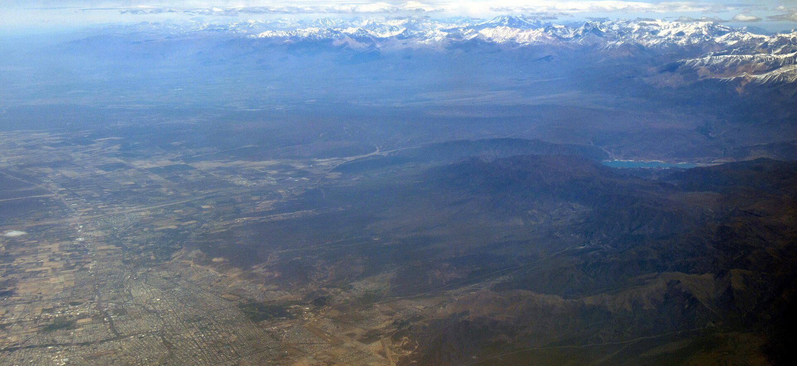

Acompañamos a organizaciones, gobiernos e instituciones a anticipar riesgos y diseñar estrategias robustas frente a la incertidumbre.

Combinamos análisis de escenarios, vigilancia estratégica e inteligencia territorial para que cada organización lea su entorno y anticipe su futuro.
El respaldo de organizaciones de prospectiva y estudios de futuros de todo el mundo.


Contanos tu desafío y diseñamos una propuesta de prospectiva a medida.